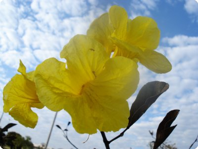
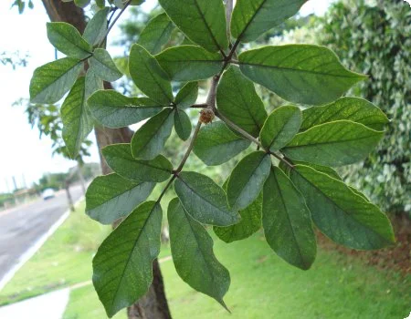

Ipê-Amarelo
O Ipê-Amarelo é uma árvore encontrada em todo o Brasil. Antes de florir, o Ipê perde toda a sua folhagem. Sua floração é belíssima e pode ocorrer em cachos ou bolas. Há quem considere a árvore um grande símbolo do Brasil.
O Ipê-Amarelo é uma árvore encontrada em todo o Brasil. Antes de florir, o Ipê perde toda a sua folhagem. Sua floração é belíssima e pode ocorrer em cachos ou bolas. Há quem considere a árvore um grande símbolo do Brasil.


A floração dos ipês-amarelos ocorre entre junho e setembro e dura cerca de uma semana em cada árvore. Os amarelos florescem depois dos ipês roxos e antes dos ipês brancos.

As folhas do ipê são formadas por 5 folíolos. São verde-escuras e têm textura lisa. Pode ser útil observar o tronco, que geralmente é reto e de casca espessa.